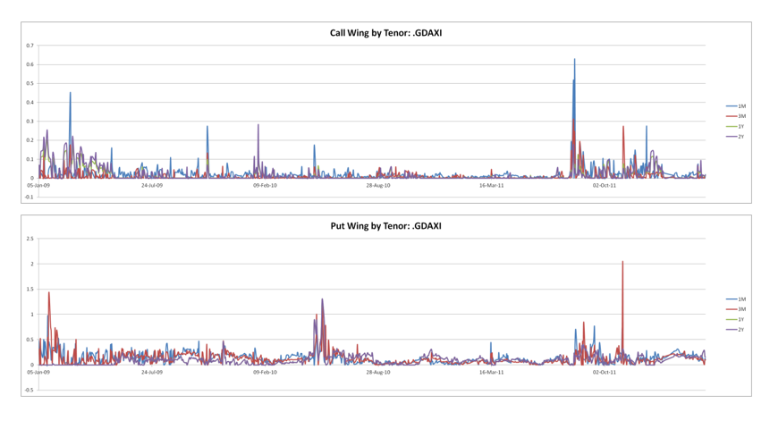

1.1.2.2.4. Model Methodology#
1.1.2.2.4.1. Mathematical Foundation and Implementation Framework#

1.1.2.2.4.1.1. 🎯 Executive Overview#
The Analytical Sigma Volatility (ASV) model represents a breakthrough in quantitative finance, providing a mathematically rigorous yet computationally efficient approach to volatility surface construction. Designed specifically for production trading environments, ASV combines theoretical sophistication with practical market intuition.
1.1.2.2.4.1.2. 🧮 Mathematical Innovation#
ASV expresses implied volatility as an analytical function of strike for liquid maturities, solving the fundamental challenge of balancing model complexity with computational performance. The model provides a sophisticated framework that emphasizes interpretability and stability across all market regimes, from normal conditions to extreme stress scenarios.
1.1.2.2.4.1.2.1. 🎪 Core Mathematical Advantages#
📊 Analytical Tractability: Closed-form solutions eliminate numerical approximation errors
⚡ Computational Efficiency: Sub-millisecond evaluation enables real-time applications
🎯 Parameter Orthogonality: Independent parameters facilitate risk factor attribution
🛡️ Numerical Stability: Robust performance across all market conditions
🔄 Differentiability: Smooth Greeks calculation for risk management
1.1.2.2.4.1.3. 🎛️ Parameter Architecture Excellence#
ASV represents implied volatility through five carefully designed, intuitive parameters for each listed maturity. This architecture balances mathematical rigor with market practitioner understanding:
1.1.2.2.4.1.3.1. 📊 Complete Parameter Specification#
Parameter |
Symbol |
Market Interpretation |
Mathematical Role |
Trading Impact |
Risk Implication |
|---|---|---|---|---|---|
ATM Volatility |
\(\sigma_{ATM}\) |
Base volatility level |
Reference volatility at forward strike |
Core option pricing |
Overall portfolio vega |
Skew |
\(\rho\) |
Directional bias |
Linear slope of volatility smile |
Put-call spread pricing |
Delta-hedging efficiency |
Smile |
\(\nu\) |
Convexity |
Quadratic curvature around ATM |
Straddle/strangle pricing |
Gamma exposure management |
Put Wing |
\(w_p\) |
Downside tail behavior |
Asymptotic volatility for low strikes |
Crash protection cost |
Tail risk hedging |
Call Wing |
\(w_c\) |
Upside tail behavior |
Asymptotic volatility for high strikes |
Rally participation cost |
Upside exposure |
1.1.2.2.4.1.3.2. 🎯 Parameter Design Philosophy#
Each parameter serves a specific market function while maintaining mathematical independence:
// Our project ASV parameter interpretation framework
namespace xsigma::asv {
struct ParameterInterpretation {
// ATM Volatility: The foundation of all option pricing
// - Represents market's view of underlying asset volatility
// - Directly impacts all option values proportionally
// - Primary driver of portfolio vega exposure
// Skew: Directional market bias indicator
// - Negative skew: Higher put volatilities (crash protection)
// - Positive skew: Higher call volatilities (momentum markets)
// - Zero skew: Symmetric volatility smile
// Smile: Tail risk pricing mechanism
// - Higher smile: More expensive tail protection
// - Lower smile: Flatter volatility surface
// - Captures market's tail risk aversion
// Wings: Extreme strike behavior controllers
// - Put wing: Deep out-of-money put behavior
// - Call wing: Deep out-of-money call behavior
// - Enable flexible tail modeling
};
}
This parameter structure enables both systematic trading algorithms and discretionary traders to effectively interpret and utilize volatility surface information.
1.1.2.2.4.1.4. Mathematical Framework#
1.1.2.2.4.1.4.1. Parametric Form Structure#
The ASV parameterization expresses implied volatility \(\sigma(K,T)\) as a function of strike \(K\) and maturity \(T\) through the following analytical framework:
Parameter Mapping:
Mathematical Symbol |
Parameter Name |
Market Role |
|---|---|---|
\(\sigma_{\text{ATM}}\) |
ATM Volatility |
Base volatility level at forward strike |
\(\rho\) |
Skew |
Linear slope coefficient (directional bias) |
\(\nu\) |
Smile |
Quadratic curvature coefficient (convexity) |
\(w_p\) |
Put Wing |
Asymptotic volatility for low strikes |
\(w_c\) |
Call Wing |
Asymptotic volatility for high strikes |
\(F\) |
Forward Price |
Reference price at maturity \(T\) |
Functional Form Properties:
The functional form \(f\) is determined by solving a cubic equation analytically
Parameters can be explicitly specified or derived from term structure models
Solution ensures continuous and differentiable volatility surface
1.1.2.2.4.1.4.2. Moneyness Transformation#
The model operates in log-moneyness space for improved numerical stability:
This transformation provides several advantages:
Symmetry: Balanced treatment of puts and calls
Stability: Reduced numerical sensitivity to absolute price levels
Interpretability: Natural scaling for volatility smile analysis
Universality: Consistent framework across different underlying prices
1.1.2.2.4.2. Term Structure Framework#
ASV supports flexible term structure modeling for parameter evolution across maturities. The framework accommodates three distinct parameterization approaches:
1.1.2.2.4.2.1. 1. Smooth Term Structure with Double Exponential#
Mathematical Form: $\(P(T) = P_{\infty} + (P_0 - P_{\infty}) \cdot e^{-\lambda_1 T} + (P_1 - P_{\infty}) \cdot e^{-\lambda_2 T}\)$
Parameter Interpretation:
\(P_{\infty}\): Long-term asymptotic parameter value
\(P_0\): Short-term parameter level
\(P_1\): Intermediate-term adjustment
\(\lambda_1, \lambda_2\): Decay rates for different time scales
Applications:
ATM Volatility: Term structure of volatility levels
Skew Evolution: Time-dependent directional bias
Wing Behavior: Maturity-dependent tail characteristics
1.1.2.2.4.2.2. 2. Smooth Term Structure with Single Exponential#
Mathematical Form: $\(P(T) = P_{\infty} + (P_0 - P_{\infty}) \cdot e^{-\lambda T}\)$
Simplified Structure:
Reduced parameter count for stable calibration
Monotonic evolution toward long-term level
Suitable for parameters with clear time trends
1.1.2.2.4.2.3. 3. Our Project Term Structure Implementation#
Vector Term Structure Class:
namespace xsigma {
class vector_term_structure {
public:
// Constructor with time points and values
vector_term_structure(
const vector<double>& times,
const vector<double>& values,
interpolation_type interp = interpolation_type::LINEAR
);
// Get value at specific time with interpolation
double value(double time) const;
// Get value at specific datetime
double value(const datetime& dt) const;
// Vectorized evaluation
void values(vector<double>& output, const vector<double>& times) const;
private:
vector<double> times_;
vector<double> values_;
interpolation_type interpolation_;
};
// ASV term structure data implementation
ptr_const<volatility_model> volatility_data_asv::model(const datetime& expiry) const {
const auto time_to_expiry = time_fraction(datetime::now(), expiry);
// Extract parameters for this expiry
const auto anchor = anchor_strike_->value(time_to_expiry);
const auto ctrl_p = ctrl_put_->value(time_to_expiry);
const auto ctrl_c = ctrl_call_->value(time_to_expiry);
const auto atm = atm_->value(time_to_expiry);
const auto skew = skew_->value(time_to_expiry);
const auto smile = smile_->value(time_to_expiry);
const auto put = put_->value(time_to_expiry);
const auto call = call_->value(time_to_expiry);
// Create ASV model for this expiry
return make_ptr<volatility_model_extended_svi>(
anchor, ctrl_p, ctrl_c, atm, skew, smile, put, call);
}
}
Interpolation Types Available:
namespace xsigma {
enum class interpolation_type {
LINEAR, // Linear interpolation
CUBIC_SPLINE, // Cubic spline interpolation
MONOTONIC_CUBIC, // Monotonic cubic interpolation
FLAT_FORWARD, // Flat forward interpolation
LOG_LINEAR, // Log-linear interpolation
EXPONENTIAL_DECAY // Exponential decay for volatility
};
}
1.1.2.2.4.3. Parameterization Details#
The ASV model employs different mathematical formulations depending on the sign and magnitude of the smile parameter, ensuring robust behavior across all market regimes.
1.1.2.2.4.3.1. ASV Mathematical Implementation from Our Project#
Core ASV Formula Implementation:
namespace xsigma {
// The actual ASV implied volatility calculation
double volatility_model_extended_svi::implied_volatility(
double forward,
double strike,
double expiry,
implied_volatility_enum type) const {
// Determine which wing parameters to use based on strike vs forward
const auto put_call = (strike <= anchor_strike_) ? put_ : call_;
const auto ctrl = (strike <= anchor_strike_) ? ctrl_put_ : ctrl_call_;
const auto adjustement_inv = time_adjustement_inv(ctrl, expiry);
// Call the core mathematical function
return implied_volatility_helper(
strike, forward, adjustement_inv, ctrl, atm_, skew_, smile_, put_call);
}
}
Mathematical Formulation in Code:
namespace xsigma {
double implied_volatility_helper(
double strike,
double fwd,
double adjustement_inv,
double ctrl,
double atm,
double skew,
double smile,
double put_call) {
constexpr double min_vol = 0.01;
// Calculate moneyness-like variable
const auto x = strike / fwd;
const auto k = tanh(ctrl * log(x)) * adjustement_inv;
const auto k2 = k * k;
// Cubic equation coefficients: vol^3 + b*vol^2 + c*vol + d = 0
const auto b = -(atm + 2. * skew * k) * atm;
const auto c = -smile * k2;
const auto d = -put_call * k2 * k2;
// Solve cubic equation analytically
const auto vol = polynomial_solver::third_degree_polynomial_solver(b, c, d);
// Ensure minimum volatility constraint
return std::max(vol, min_vol);
}
}
Wing Control Implementation:
namespace xsigma {
// Time adjustment for wing control parameters
inline double time_adjustement_inv(double ctrl, double expiry) {
return 1. / (ctrl * sqrt(expiry));
}
// The wing control mechanism uses hyperbolic tangent
// k = tanh(ctrl * log(strike/forward)) * time_adjustment_inv
// This provides smooth transitions and bounded behavior
}
1.1.2.2.4.3.2. Case 2: Negative Smile with Positive Wings#
For negative smile values where wing parameters remain positive:
Constraint Condition: $\(\text{smile} < 0 \text{ and } (1_{K \leq F} \cdot w_p + 1_{K > F} \cdot w_c) \geq 0\)$
Modified Formulation:
Adjusted mathematical form to maintain positivity
Special handling of convexity term
Preservation of wing behavior characteristics
1.1.2.2.4.3.3. Adjustment for Negative Wings#
When wing parameters become negative, ASV implements sophisticated adjustments to maintain mathematical consistency and economic interpretability.
1.1.2.2.4.3.3.1. Negative Smile Adjustment#
Mathematical Treatment: The model implements a cubic equation solution that ensures:
Volatility Positivity: All volatility values remain strictly positive
Smooth Transitions: Continuous derivatives across parameter regimes
Economic Consistency: Reasonable asymptotic behavior
Numerical Stability: Robust computation across parameter ranges
Implementation Strategy:
Detection: Identify negative smile and wing combinations
Transformation: Apply mathematical adjustments to maintain consistency
Validation: Verify resulting volatility surface properties
Monitoring: Track adjustment frequency and magnitude
1.1.2.2.4.4. Cubic Equation Solution#
1.1.2.2.4.4.1. Mathematical Foundation#
The ASV parameterization fundamentally relies on solving a cubic equation of the form:
Where coefficients \(a, b, c, d\) are functions of the ASV parameters and market variables.
1.1.2.2.4.4.2. Solution Methodology#
1.1.2.2.4.4.2.1. Existence of Solution#
Theoretical Guarantees:
Cubic equations always have at least one real solution
ASV parameter constraints ensure economically meaningful solutions
Numerical stability maintained through careful coefficient scaling
Boundary case handling for degenerate parameter combinations
1.1.2.2.4.4.2.2. Implemented Solution#
Analytical Approach:
1. Coefficient Calculation:
- Compute cubic coefficients from ASV parameters
- Apply scaling for numerical stability
- Handle special cases (linear, quadratic degeneracy)
2. Root Finding:
- Use analytical cubic formula for exact solutions
- Select economically meaningful root
- Validate solution properties
3. Volatility Construction:
- Transform root to volatility space
- Apply wing adjustments
- Ensure positivity and smoothness
1.1.2.2.4.4.2.3. Alternative Expression#
For enhanced numerical stability, ASV provides alternative solution expressions:
Trigonometric Form: For cases with three real roots Cardano’s Formula: For general cubic solution Numerical Fallback: Robust iterative methods for edge cases
1.1.2.2.4.4.3. Continuity and Boundedness#
1.1.2.2.4.4.3.1. Continuity Properties#
Parameter Continuity:
Smooth volatility surface evolution with parameter changes
Continuous derivatives with respect to all parameters
No discontinuities at parameter boundaries
Stable behavior during parameter optimization
Strike Continuity:
Smooth volatility function across all strikes
Continuous derivatives for local volatility calculation
No artificial discontinuities at wing boundaries
Proper asymptotic behavior at extreme strikes
1.1.2.2.4.4.3.2. Bounded Volatility Values#
Mathematical Bounds:
Lower Bound: Volatility values bounded away from zero
Upper Bound: Reasonable asymptotic limits on wings
Parameter Constraints: Implicit bounds through parameter relationships
Market Consistency: Bounds aligned with market observations
Implementation:
Automatic Clipping: Soft bounds with smooth transitions
Parameter Adjustment: Automatic correction for extreme values
Warning Systems: Alerts for near-boundary conditions
Quality Monitoring: Continuous validation of bound compliance
1.1.2.2.4.5. Model Design and Development#
1.1.2.2.4.5.1. Development Philosophy#
Market-Driven Design:
Parameters directly interpretable by traders
Behavior consistent with market intuition
Stable performance across market regimes
Computational efficiency for real-time applications
Mathematical Rigor:
Analytical solution methods where possible
Robust numerical techniques for edge cases
Comprehensive error handling and validation
Extensive testing across parameter ranges
1.1.2.2.4.5.2. Regulatory Compliance#
Model Risk Management:
Comprehensive documentation of mathematical methodology
Validation framework for parameter behavior
Stress testing across extreme market conditions
Regular model performance monitoring and reporting
Audit Trail:
Complete parameter history and evolution tracking
Calibration quality metrics and validation results
Exception handling and override documentation
Regulatory reporting and compliance verification
This methodology section establishes the mathematical foundation for ASV implementation while ensuring practical applicability and regulatory compliance.